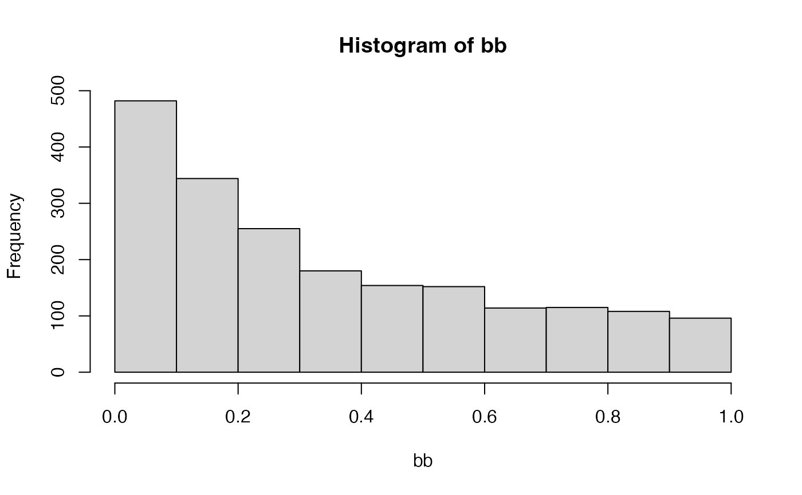

adjust columns
adjust_p_values(
mm,
column = "p.value",
group_by_col = "contrast",
newname = "FDR"
)
bb <- c(runif(1000), rexp(1500,rate=5))
length(bb)
#> [1] 2500
bb <- bb[bb < 1]
length(bb)
#> [1] 2482
bb <- bb[1:2000]
hist(bb)

data <- data.frame(contrast = rep(LETTERS[1:5],400), p.value = bb)
dataX <- adjust_p_values(data)
Adata <- dataX |> dplyr::filter(contrast == "A")
stopifnot(all.equal(Adata$FDR, p.adjust(Adata$p.value, method="BH")))
data2 <- adjust_p_values(data, group_by_col = NULL)
stopifnot(all.equal(data2$FDR, p.adjust(data2$p.value, method="BH")))